使用算子融合加速未softmax的Attention¶
学习目标¶
- 理解用分块矩阵乘法实现未softmax的Attention
- 学习代码flash_attn_no_softmax_kernel
1. 为什么要用分块矩阵实现¶
1.1 问题简介¶
为了简化和理解FlashAttention算法，我们先不考虑 Softmax，仅考虑线性矩阵乘法组合 (QK^T)V。
假设完整矩阵的维度如下：
- Q \in \mathbb{R}^{N \times d}
- K \in \mathbb{R}^{N \times d}
- V \in \mathbb{R}^{N \times d}
目标是计算完整输出：
如果直接做矩阵乘法，Q K^T \in \mathbb{R}^{N \times N}，这是一个非常大的矩阵。对于常见的大模型来说，序列长度N通常是4k、8k甚至到128k。这么大的矩阵显然无法放在寄存器或者共享内存里，需要把它写到HBM里。而下一次和V做乘法的时候又需要读取到寄存器或者共享内存。
1.2 用结合律优化¶
细心的同学可能会说，我们不能用结合律来改变矩阵乘法的次序吗？比如我先计算K^TV，然后再用Q乘以它。我们先来验证一下，假设N=2048, d=128。
1.2.1. 表达式一：(QK^T)V¶
- 计算过程与维度变化：
- 计算 S = QK^T：矩阵尺寸 (N \times d) \times (d \times N)，得到中间矩阵 S \in \mathbb{R}^{N \times N}。
- 计算 (QK^T)V = SV：矩阵尺寸 (N \times N) \times (N \times d)，得到最终矩阵 \in \mathbb{R}^{N \times d}。
- 计算量（标量乘法次数）：
- 第一步：N \cdot d \cdot N = N^2 d
- 第二步：N \cdot N \cdot d = N^2 d
- 总计算量：2N^2 d
- 代入数值 (N=2048, d=128)：
- 中间矩阵空间占用：
- 中间矩阵 S 的尺寸为 N \times N。
- 元素个数：2048 \times 2048 = 4,194,304 个元素。
- 内存大小（以 FP32 计算，每个元素 4 字节）：16.8 \text{ MB}（若为 FP16 则为 8.4 \text{ MB}）。
1.2.2. 表达式二：Q(K^TV)¶
- 计算过程与维度变化：
- 计算 T = K^TV：矩阵尺寸 (d \times N) \times (N \times d)，得到中间矩阵 T \in \mathbb{R}^{d \times d}。
- 计算 Q(K^TV) = QT：矩阵尺寸 (N \times d) \times (d \times d)，得到最终矩阵 \in \mathbb{R}^{N \times d}。
- 计算量（标量乘法次数）：
- 第一步：d \cdot N \cdot d = N d^2
- 第二步：N \cdot d \cdot d = N d^2
- 总计算量：2N d^2
- 代入数值 (N=2048, d=128)：
- 中间矩阵空间占用：
- 中间矩阵 T 的尺寸为 d \times d。
- 元素个数：128 \times 128 = 16,384 个元素。
- 内存大小（FP32）：65.5 \text{ KB}（若为 FP16 则为 32.8 \text{ KB}）。
1.2.3. 对比总结¶
| 维度指标 | (QK^T)V 方式 | Q(K^TV) 方式 | 优化倍数差距 (\frac{\text{方案一}}{\text{方案二}}) |
|---|---|---|---|
| 计算复杂度 | \mathcal{O}(N^2 d) | \mathcal{O}(N d^2) | N / d = 16 倍 |
| 具体计算量 (FLOPs) | \approx 1.07 \times 10^9 | \approx 6.71 \times 10^7 | 16 倍 |
| 中间矩阵尺寸 | N \times N (4.19M 元素) | d \times d (16.4K 元素) | (N/d)^2 = 256 倍 |
| 中间内存占用 (FP32) | 16.8 \text{ MB} | 65.5 \text{ KB} | 256 倍 |
1.3 为什么不能这么做？¶
改变结合律将原本依赖序列长度平方 O(N^2) 的复杂度降到了线性 O(N)（因为 d 是常数维度）。但在标准 Transformer 中，由于 Q 和 K^T 之间需要通过 Softmax 进行非线性交互（即 \text{Softmax}(QK^T)V），所以无法直接应用结合律。
2. 分块矩阵乘法¶
分块矩阵乘法（Block Matrix Multiplication）是将大矩阵划分为若干较小的子矩阵（称为“块”），然后将这些块当作常规矩阵的标量元素进行乘法和加法运算的一种方法。只要分块方式满足特定的相容性条件，分块矩阵的乘法法则与普通矩阵乘法完全一致。
2.1 基本定义与计算公式¶
假设有两个矩阵：
- 矩阵 A 的尺寸为 m \times p，将其按行和列划分为 s \times r 个子块：
其中每个子块 A_{ij} 的尺寸为 m_i \times p_j（满足 \sum_{i=1}^s m_i = m，\sum_{j=1}^r p_j = p）。
- 矩阵 B 的尺寸为 p \times n，将其划分为 r \times t 个子块：
其中每个子块 B_{jk} 的尺寸为 p_j \times n_k（满足 \sum_{j=1}^r p_j = p（必须与 A 的列分块大小严格对应），\sum_{k=1}^t n_k = n）。
核心结论：乘积矩阵 C = AB 的尺寸为 m \times n，它也可以按 s \times t 个子块进行划分：
其中每一个子块 C_{ik}（尺寸为 m_i \times n_k）的计算公式为：
2.2 详细证明过程(可选内容)¶
要证明分块矩阵乘法成立，我们只需要证明：分块计算出来的矩阵 C 中的任意一个元素，与按普通矩阵乘法算出来的对应元素完全相等。
2.2.1. 写出普通矩阵乘法的元素定义¶
设矩阵 C = AB，其第 i 个大行、第 k 个大列对应的子块 C_{ik} 中，任意一个具体元素可以记为 c_{\alpha \beta}。
- 这里的 \alpha 是矩阵 C 的全局行索引（位于第 i 个行分块区间内）。
- 这里的 \beta 是矩阵 C 的全局列索引（位于第 k 个列分块区间内）。
根据普通矩阵乘法的定义：
其中 p 是 A 的列数（也是 B 的行数）。
2.2.2. 将求和区间按分块进行拆解¶
因为矩阵 A 在列方向上、矩阵 B 在行方向上都按 p_1, p_2, \dots, p_r 进行了分块（\sum_{j=1}^r p_j = p），我们可以把总求和项从 l = 1 到 p，拆分成 r 个连续的子区间求和：
也就是说，我们将内部的求和变量 l 归入不同的分块区间 j 中。
2.2.3. 对应到子块的矩阵乘法¶
现在我们来看看分块矩阵乘法中，子块 C_{ik} 的定义是什么。 根据矩阵乘法的分块公式，子块 C_{ik} 等于：
我们来看这个累加项中的第 j 项：A_{ij} B_{jk}。
- A_{ij} 是一个 m_i \times p_j 的矩阵，其行索引对应全局的 \alpha，列索引对应分块区间 j 内的局部索引。
- B_{jk} 是一个 p_j \times n_k 的矩阵，其行索引对应分块区间 j 内的局部索引（即上面的 l），列索引对应全局的 \beta。
根据子矩阵（普通矩阵）相乘的定义，矩阵 A_{ij} B_{jk} 的 (\alpha, \beta) 位置上的元素正好就是：
2.2.4. 得出结论¶
将上述两步结合起来：
- 分块计算得到的子块 C_{ik} 的 (\alpha, \beta) 元素为：
- 这与我们用普通矩阵乘法直接算出来的元素 c_{\alpha \beta} = \sum_{l=1}^p a_{\alpha l} b_{l \beta} 完全相等。
因此，分块矩阵的乘法法则得证。
2.3 分块计算示例¶
2.3.1 例1¶
2.3.1.1 A和B¶
2.3.1.2 分块¶
矩阵 A 是一个 4 \times 2 的矩阵，横向切一刀、竖向切一刀后，划分为 2 \times 2 的子块：
矩阵 B 是一个 2 \times 4 的矩阵，同样横向切一刀、竖向切一刀后，划分为 2 \times 2 的子块：
2.3.1.3 计算过程¶
根据分块矩阵的乘法法则，结果矩阵 C = AB 可以表示为一个 2 \times 2 的分块矩阵：
首先，明确各子块的具体内容：
- 矩阵 A 的子块：
- 矩阵 B 的子块：
接下来，我们一步一步计算结果矩阵的四个子块：
1. 计算子块 C_{11}¶
2. 计算子块 C_{12}¶
3. 计算子块 C_{21}¶
4. 计算子块 C_{22}¶
2.3.1.4. 最终结果矩阵 C¶
将四个子块组合起来，得到最终的完整矩阵 C：
2.3.2 例2¶
2.3.2.1 A和B¶
与前面完全相同：
2.3.2.2 分块¶
采用非均匀切分方法：
- 矩阵 A (4 \times 2) 的行切分为 1 行加 3 行（在第 1 行和第 2 行之间横切），列切分为 1 列加 1 列（由于 A 共有 2 列）。
- 矩阵 B (2 \times 4) 的行切分需与 A 的列切分保持一致（即 1 行加 1 行），列切分为用户要求的 3 列加 1 列（在第 3 列和第 4 列之间竖切）。
对应的分块矩阵形式为：
各子块的具体内容为：
- 矩阵 A 的子块：
- 矩阵 B 的子块：
2.3.2.3 计算过程¶
根据分块矩阵乘法法则，结果矩阵 C = AB 仍然可以表示为：
我们一步一步计算这四个子块：
1. 计算子块 C_{11} (1 \times 3 矩阵)¶
2. 计算子块 C_{12} (1 \times 1 矩阵)¶
3. 计算子块 C_{21} (3 \times 3 矩阵)¶
4. 计算子块 C_{22} (3 \times 1 矩阵)¶
2.3.2.4 最终结果矩阵 C¶
将上述非均匀分块组合起来，得到的完整结果矩阵 C 与均匀切分时的结果完全一致：
2.4 核心性质¶
- 转置规则：分块矩阵的转置等于将其各子块转置后，再进行块位置的转置。例如若 A = \begin{pmatrix} A_{11} & A_{12} \\ A_{21} & A_{22} \end{pmatrix}，则 A^T = \begin{pmatrix} A_{11}^T & A_{21}^T \\ A_{12}^T & A_{22}^T \end{pmatrix}。
- 求逆规则：若分块矩阵是对角矩阵或三角矩阵，其求逆运算可以简化为对各个对角块分别求逆。例如，对于分块对角矩阵：
2.5 矩阵不好切分怎么办？¶
在实际应用中，为了下标好计算，我们通常使用均匀切分。但是有的时候矩阵的行或者列不一定容易切分，比如说行是11，这是一个质数，我们没有办法把它均匀切分。这个时候我们就可以在逻辑上把它补零扩充它。
下面我们以计算两个维度均为 3（质数） 的小矩阵乘法 C = A \times B 为例来说明这种方法。
2.5.1. 原始数据（3 \times 3）¶
设真实矩阵 A 和 B 的大小为 3 \times 3：
2.5.2. 零填充策略（Padding 到 4 \times 4）¶
为了满足 GPU 的分块对齐或规整计算需求（例如选择分块大小 B = 2 或对齐到 4 的倍数），我们将矩阵在右侧和下方进行零填充（Pad），扩展为 4 \times 4 的矩阵：
- 填充后的矩阵 \tilde{A}（右侧和底部补 0）：
- 填充后的矩阵 \tilde{B}（右侧和底部补 0）：
2.5.3. 计算与裁剪结果¶
- GPU 内部执行：直接对这两个 4 \times 4 的填充矩阵执行标准的块矩阵乘法（例如划分为 4 个 2 \times 2 的小块进行计算），整个 Kernel 内部完全是整齐的循环，无需任何
if (row < 3)的分支判断。 - 获取最终结果：计算出的 4 \times 4 结果矩阵 \tilde{C} = \tilde{A} \times \tilde{B} 为：
- 裁剪（Crop）：取左上角原本的 3 \times 3 区域，即为最终所求的有效矩阵 C：
3. 使用分块矩阵乘法计算O¶
实现分块矩阵乘法来计算 O = (QK^T)V（即标准注意力机制的核心矩阵乘积，暂不考虑 Softmax 的非线性归一化，专注于纯矩阵连乘的块级分解），我们需要充分利用分块矩阵的划分子矩阵性质。
由于 Q, K \in \mathbb{R}^{N \times d} 且 V \in \mathbb{R}^{N \times d}，矩阵的维度非常适合沿序列长度维度 N 进行非对称分块。
3.1 分块方案的设计¶
设 Q 的行数和 K, V 的行数均为 N，我们采用不同的分块大小（如 FlashAttention 中的设计）：
- 对 Q 按行分块（划分为 T_r 个行条，每个大小为 B_r \times d）：
- 对 K 按行分块（划分为 T_c 个行条，每个大小为 B_c \times d）： 对应的转置 K^T 就会变成按列分块（每个大小为 d \times B_c）：
- 对 V 按行分块（划分为 T_c 个行条，每个大小为 B_c \times d）：
- 对输出 O 按行分块（分块方式与 Q 保持一致，划分为 T_r 个行条，每个大小为 B_r \times d）：
3.2 两步分块乘法的详细推导¶
计算过程分为两步：先计算中间分块矩阵 S = QK^T，再计算最终结果 O = SV。
3.2.1 第一步：计算中间分块矩阵 S = QK^T¶
S 是一个 N \times N 的矩阵，可以被划分为 T_r \times T_c 个大小为 B_r \times B_c 的子块 S_{ij}：
根据分块矩阵乘法法则，第 i 行、第 j 列的子块 S_{ij}（大小为 B_r \times B_c）的计算公式为：
- 物理意义：子块 S_{ij} 代表第 i 个 Query 块（包含 B_r 个向量）与第 j 个 Key 块（包含 B_c 个向量）之间的注意力得分矩阵。
- 计算规模：每次乘法是 (B_r \times d) \times (d \times B_c)，耗时 \mathcal{O}(B_r B_c d)。整个矩阵 S 共有 T_r \times T_c 个子块，第一步总计算量为 (T_r T_c) \times (\mathcal{O}(B_r B_c d)) = \mathcal{O}(N^2 d)。
3.2.2 第二步：计算最终结果 O = SV¶
现在我们要用分块矩阵 S 乘以分块矩阵 V：
根据分块矩阵乘法法则，输出矩阵 O 的第 i 个行块 O_i（大小为 B_r \times d）是由 S 的第 i 行各子块与 V 的各行块相乘累加得到的：
将第一步的 S_{ij} = Q_i K_j^T 代入上式，我们可以得到针对单个输出块 O_i 的完整展开式：
3.3 为什么分块乘法在 GPU 上至关重要（FlashAttention 的核心思想）¶
如果直接在内存中计算并存储完整的 N \times N 矩阵 S（当 N=2048 时占用约 16.8 MB，若 N=16384 则高达 1 GB 以上），会频繁触发显存（Global Memory）的读写瓶颈。
通过上述分块推导，我们可以做以下硬件级优化：
- 在线 Softmax 技巧（Online Softmax）：
- 标准注意力中 S_{ij} 后面需要跟一个 \text{Softmax}。如果按块计算，我们可以利用分块累加的性质，在循环计算 j 的过程中（即计算 \sum Q_i K_j^T V_j 时）动态更新分母和最大值，完全不需要在全局显存中完整实例化 N \times N 的中间矩阵 S。
- 片上缓存复用（SRAM Tiling）：
- 将 Q_i 加载到 GPU 的高速共享内存（SRAM）中。
- 循环从全局显存加载 K_j^T 和 V_j 到 SRAM。
- 在 SRAM 内部完成 S_{ij} = Q_i K_j^T 及其与 V_j 的乘加运算。
- 这样可以将显存访存复杂度从 \mathcal{O}(N^2) 降低到 \mathcal{O}(N)，这正是 FlashAttention 算法的精髓所在。
3.4 只看一行¶
我们前面假设的分块方法是Q的每个分块大小是B_r \times d，现在特殊一点，我们的分块大小是1 \times d，也就是一行。
而K和V的划分也是每个分块为1行，那么输出O也是N行，其中第i行为：
从公式上看，这和前面没有区别，唯一的不同就是Q_i是一行而不是B_r行，K_j也是一行。其中Q_i是一个行向量(1 \times N的矩阵)，而K_i^T是一个列向量(N \times 1的矩阵)，所以(Q_i K_j^T)就是这两个向量的内积，也就是一个 标量。
我们可以这么解读它：为了计算输出O的第i行，我们首先找到Q_i，然后求Q_i和K_1的内积，得到一个相似度得分S_{i1}(标量)，用这个S_{i1}乘以V_1(标量乘以向量，也就是对向量进行缩放)。再计算Q_i和K_2的相似度S_{i2}，然后再用这个相似度乘以V_2，然后把这两个 加权 后的向量相加。......
这个过程不就是我们之前描述的注意力机制吗？唯一的区别就是相似度得分没有用Softmax做归一化！
3.5 手算一个例子¶
我们还是使用下面的例子：
我们来计算一下O_3（第3行）。
3.5.1 分块¶
当 Q、K、V 全部按单行分块（即 B_r = 1, B_c = 1，T_r = 6, T_c = 6）时，计算公式变为：
已知：
- Q_3 = \begin{pmatrix} 1 & 1 \end{pmatrix}
- K 的各行转置 K_j^T 分别为： K_1^T = \begin{pmatrix} 1 \\ 1 \end{pmatrix}, \quad K_2^T = \begin{pmatrix} 2 \\ 0 \end{pmatrix}, \quad K_3^T = \begin{pmatrix} 0 \\ 1 \end{pmatrix}, \quad K_4^T = \begin{pmatrix} 1 \\ 2 \end{pmatrix}, \quad K_5^T = \begin{pmatrix} 2 \\ 1 \end{pmatrix}, \quad K_6^T = \begin{pmatrix} 0 \\ 2 \end{pmatrix}
- V 的各行块 V_j 分别为： V_1 = \begin{pmatrix} 1 & 0 \end{pmatrix}, \quad V_2 = \begin{pmatrix} 0 & 1 \end{pmatrix}, \quad V_3 = \begin{pmatrix} 2 & 1 \end{pmatrix}, \quad V_4 = \begin{pmatrix} 1 & 1 \end{pmatrix}, \quad V_5 = \begin{pmatrix} 0 & 2 \end{pmatrix}, \quad V_6 = \begin{pmatrix} 2 & 2 \end{pmatrix}
3.5.2 逐项计算 (Q_3 K_j^T) V_j¶
此时 Q_3 K_j^T 是一个标量，计算过程如下：
-
当 j = 1：
- S_{31} = Q_3 K_1^T = 1 \times 1 + 1 \times 1 = 2
- S_{31} V_1 = 2 \times \begin{pmatrix} 1 & 0 \end{pmatrix} = \begin{pmatrix} 2 & 0 \end{pmatrix}
-
当 j = 2：
- S_{32} = Q_3 K_2^T = 1 \times 2 + 1 \times 0 = 2
- S_{32} V_2 = 2 \times \begin{pmatrix} 0 & 1 \end{pmatrix} = \begin{pmatrix} 0 & 2 \end{pmatrix}
-
当 j = 3：
- S_{33} = Q_3 K_3^T = 1 \times 0 + 1 \times 1 = 1
- S_{33} V_3 = 1 \times \begin{pmatrix} 2 & 1 \end{pmatrix} = \begin{pmatrix} 2 & 1 \end{pmatrix}
-
当 j = 4：
- S_{34} = Q_3 K_4^T = 1 \times 1 + 1 \times 2 = 3
- S_{34} V_4 = 3 \times \begin{pmatrix} 1 & 1 \end{pmatrix} = \begin{pmatrix} 3 & 3 \end{pmatrix}
-
当 j = 5：
- S_{35} = Q_3 K_5^T = 1 \times 2 + 1 \times 1 = 3
- S_{35} V_5 = 3 \times \begin{pmatrix} 0 & 2 \end{pmatrix} = \begin{pmatrix} 0 & 6 \end{pmatrix}
-
当 j = 6：
- S_{36} = Q_3 K_6^T = 1 \times 0 + 1 \times 2 = 2
- S_{36} V_6 = 2 \times \begin{pmatrix} 2 & 2 \end{pmatrix} = \begin{pmatrix} 4 & 4 \end{pmatrix}
3.5.3 累加求和¶
将上述 6 项相加：
4. KV在外层循环的实现(对应FlashAttention v1)¶
4.1 代码¶
完整代码在flash-attn-cpp/flash-attn-no-softmax_v0_debug.cu，下面是核心的代码：
#define BR 3 // Q 的分块大小 (Row Block)
#define BC 2 // K, V 的分块大小 (Col Block)
#define D 2 // Head Dimension (hidden_dim)
/**
* 严格按照 FA-1 Algorithm 1 循环顺序实现的 Kernel (无 Softmax 简化版)
* 循环结构：外层 j 遍历 K/V 分块，内层 i 遍历 Q 分块
*/
__global__ void flash_attn_no_softmax_kernel_v0(
const float* __restrict__ Q,
const float* __restrict__ K,
const float* __restrict__ V,
float* __restrict__ O,
const int N
) {
const int tid = threadIdx.x; // blockDim.x = BR = 3
__shared__ float k_smem[BC][D];
__shared__ float v_smem[BC][D];
__shared__ float q_smem[BR][D];
const int num_q_blocks = (N + BR - 1) / BR;
const int num_k_blocks = (N + BC - 1) / BC;
// 1. 【FA-1 核心特征】外层循环：遍历 K_j 和 V_j 分块
for (int k_block_idx = 0; k_block_idx < num_k_blocks; ++k_block_idx) {
// 1.1 加载 K_j, V_j 到 SRAM 并使其驻留
for (int row = tid; row < BC; row += blockDim.x) {
const int global_k_row = k_block_idx * BC + row;
if (global_k_row < N) {
#pragma unroll
for (int d = 0; d < D; ++d) {
k_smem[row][d] = K[global_k_row * D + d];
v_smem[row][d] = V[global_k_row * D + d];
}
} else {
#pragma unroll
for (int d = 0; d < D; ++d) {
k_smem[row][d] = 0.0f;
v_smem[row][d] = 0.0f;
}
}
}
__syncthreads(); // 确保 K_j, V_j 加载完成
// 2. 【FA-1 核心特征】内层循环：遍历所有 Q_i 分块
for (int q_block_idx = 0; q_block_idx < num_q_blocks; ++q_block_idx) {
// 2.1 搬入当前 Q_i 到 SRAM
const int global_q_row = q_block_idx * BR + tid;
if (global_q_row < N) {
#pragma unroll
for (int d = 0; d < D; ++d) {
q_smem[tid][d] = Q[global_q_row * D + d];
}
} else {
#pragma unroll
for (int d = 0; d < D; ++d) {
q_smem[tid][d] = 0.0f;
}
}
__syncthreads();
// 2.2 读取 HBM 中上一次外层循环写下的中间结果 O_old
float o_accum[D] = {0.0f};
if (global_q_row < N) {
#pragma unroll
for (int d = 0; d < D; ++d) {
o_accum[d] = O[global_q_row * D + d];
}
}
// 2.3 计算当前分块贡献 S_ij * V_j，累加到 o_accum
if (global_q_row < N) {
for (int j = 0; j < BC; ++j) {
const int global_k_row = k_block_idx * BC + j;
if (global_k_row < N) {
float S_ij = 0.0f;
#pragma unroll
for (int d = 0; d < D; ++d) {
S_ij += q_smem[tid][d] * k_smem[j][d];
}
#pragma unroll
for (int d = 0; d < D; ++d) {
o_accum[d] += S_ij * v_smem[j][d];
}
}
}
// 2.4 写回（覆写）HBM 中的 O（串行更新，无需 atomicAdd）
#pragma unroll
for (int d = 0; d < D; ++d) {
O[global_q_row * D + d] = o_accum[d];
}
}
__syncthreads(); // 确保 q_smem 可被下一个 Q_i 安全覆盖
}
}
}
// C++ 包装函数
torch::Tensor flash_attn_forward_v0(torch::Tensor Q, torch::Tensor K, torch::Tensor V) {
TORCH_CHECK(Q.is_cuda() && K.is_cuda() && V.is_cuda(), "Inputs must be CUDA tensors");
TORCH_CHECK(Q.is_contiguous() && K.is_contiguous() && V.is_contiguous(), "Inputs must be contiguous");
const int N = Q.size(0);
const int d = Q.size(1);
TORCH_CHECK(d == D, "Head dimension must match template dimension D=2");
auto O = torch::zeros_like(Q);
// 核心改造：启动单 Block (grid_size = 1)，串行完成全局归约
const int grid_size = 1;
const int block_size = BR; // 线程数与 BR 对齐
cudaStream_t stream = c10::cuda::getCurrentCUDAStream();
flash_attn_no_softmax_kernel_v0<<<grid_size, block_size, 0, stream>>>(
Q.data_ptr<float>(),
K.data_ptr<float>(),
V.data_ptr<float>(),
O.data_ptr<float>(),
N
);
return O;
}
4.2 代码跟踪阅读¶
我们这里直接不讲代码，这很难理解。我们这里是结合之前的例子来逐段阅读和调试代码。
4.2.1 输入矩阵与分块准备¶
- 维度：序列长度 N = 6，Head Dimension D = 2。
- 分块大小：BR = 3（Q 每次切 3 行），BC = 2（K/V 每次切 2 行）。
- 输入矩阵：
4.2.2 Grid和Block大小¶
我们首先来看网格和块大小怎么设置：
// C++ 包装函数
torch::Tensor flash_attn_forward_v0(torch::Tensor Q, torch::Tensor K, torch::Tensor V) {
const int N = Q.size(0);
const int d = Q.size(1);
auto O = torch::zeros_like(Q);
// 核心改造：启动单 Block (grid_size = 1)，串行完成全局归约
const int grid_size = 1;
const int block_size = BR; // 线程数与 BR 对齐
cudaStream_t stream = c10::cuda::getCurrentCUDAStream();
flash_attn_no_softmax_kernel_v0<<<grid_size, block_size, 0, stream>>>(
Q.data_ptr<float>(),
K.data_ptr<float>(),
V.data_ptr<float>(),
O.data_ptr<float>(),
N
);
}
可以看到，我们只有一个Block(grid_size = 1)，这个Block启动了BR个线程。对应到具体的例子，我们的N=6，BR=3。可以猜测，每个线程会处理N / BR = 2行的输出。
4.2.3 跟踪第3个线程¶
我们需要在VSCode里调试，所以增加launch.json：
{
// Use IntelliSense to learn about possible attributes.
// Hover to view descriptions of existing attributes.
// For more information, visit: https://go.microsoft.com/fwlink/?linkid=830387
"version": "0.2.0",
"configurations": [
{
"name": "CUDA C++: Launch",
"type": "cuda-gdb",
"request": "launch",
"program": "${workspaceFolder}/build/flash-attn-no-softmax_v0_debug"
},
]
}
并且在第22行增加条件断点：threadIdx.x == 2。调试后进入断点：
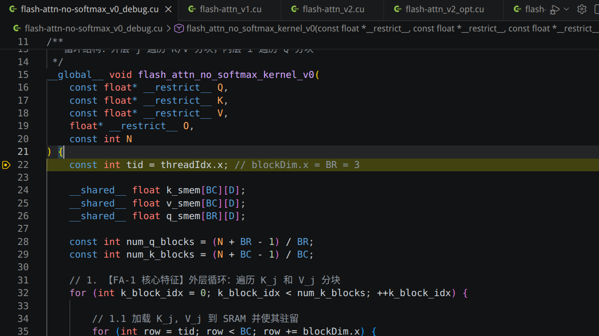
4.2.4 共享内存和块计算¶
__shared__ float k_smem[BC][D];
__shared__ float v_smem[BC][D];
__shared__ float q_smem[BR][D];
const int num_q_blocks = (N + BR - 1) / BR;
const int num_k_blocks = (N + BC - 1) / BC;
这里每个块会申请3个共享内存数组来存储Q的BR(3)行，K和V的BC(2)行。因此Q被分成2个块(num_q_blocks=2)，而K和V被分成3个块(num_k_blocks=3)。
4.2.5 加载K和V块¶
// 1. 【FA-1 核心特征】外层循环：遍历 K_j 和 V_j 分块
for (int k_block_idx = 0; k_block_idx < num_k_blocks; ++k_block_idx) {
// 1.1 加载 K_j, V_j 到 SRAM 并使其驻留
for (int row = tid; row < BC; row += blockDim.x) {
const int global_k_row = k_block_idx * BC + row;
if (global_k_row < N) {
#pragma unroll
for (int d = 0; d < D; ++d) {
k_smem[row][d] = K[global_k_row * D + d];
v_smem[row][d] = V[global_k_row * D + d];
}
} else {
#pragma unroll
for (int d = 0; d < D; ++d) {
k_smem[row][d] = 0.0f;
v_smem[row][d] = 0.0f;
}
}
}
__syncthreads(); // 确保 K_j, V_j 加载完成
注意：FlashAttention v1的外层循环是遍历所有的KV块，内存循环是遍历所有的Q块。
所以外层循环的代码是for (int k_block_idx = 0; k_block_idx < num_k_blocks; ++k_block_idx)。我们这里的代码首先是遍历K和V的第一个块，也就是：
这个线程块的所有线程协作来加载K和V。但是注意：一个块的线程数是B_r = 3，而K和V的一个块的行数是B_c，这两个值可能不一样所以需要用循环来加载(如果B_c > B_r)，这对应代码：
for (int row = tid; row < BC; row += blockDim.x)
比如我们现在调试的线程tid=2，那么它负责加载(第3行，第5行，...)。但是K和V的块只有2行，所以它不需要加载数据(B_r > B_c)。看下面的代码：
const int global_k_row = k_block_idx * BC + row;
注意：row是相对块起始位置的行号，而全局的行号还要加上k_block_idx * BC。
到执行完__syncthreads()后，线程块里的3个线程协作的把k_smem和v_smem都加载成功了，如下图所示：
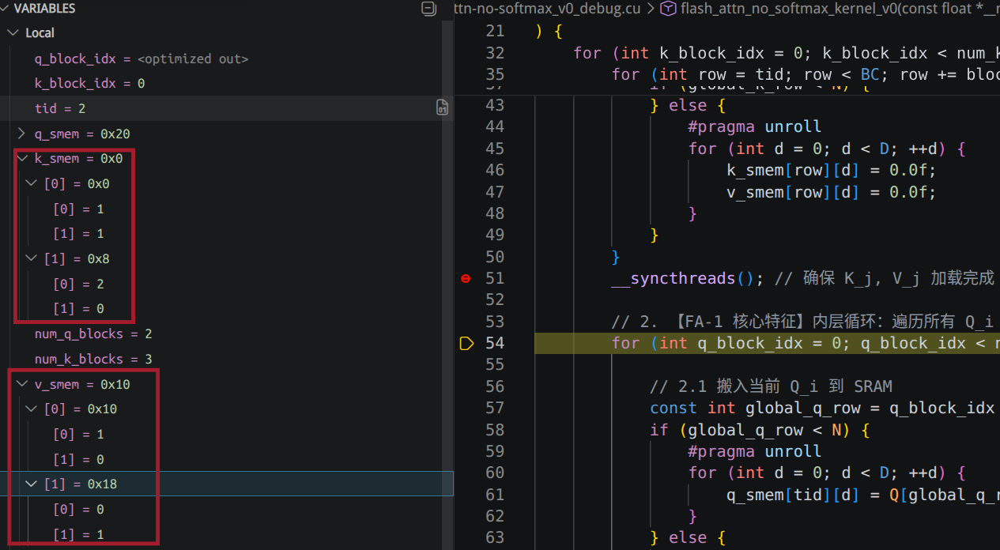
4.2.6 内存循环：首先加载Q¶
for (int q_block_idx = 0; q_block_idx < num_q_blocks; ++q_block_idx) {
// 2.1 搬入当前 Q_i 到 SRAM
const int global_q_row = q_block_idx * BR + tid;
if (global_q_row < N) {
#pragma unroll
for (int d = 0; d < D; ++d) {
q_smem[tid][d] = Q[global_q_row * D + d];
}
} else {
#pragma unroll
for (int d = 0; d < D; ++d) {
q_smem[tid][d] = 0.0f;
}
}
__syncthreads();
接下来就是内存循环遍历所有的Q块，由于线程数肯定等于B_r，所以每个线程加载一行就可以了。同样我们需要把线程块内的下标tid转换成全局行下标：const int global_q_row = q_block_idx * BR + tid;。
执行完成__syncthreads后，Q的第一个块就加载好了，如下图所示：
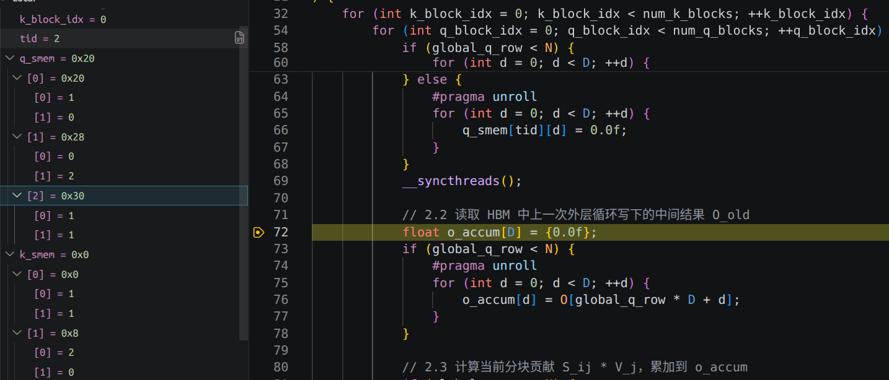
没有问题，我们要加载的Q正是：
4.2.7 读取O的累加值¶
// 2.2 读取 HBM 中上一次外层循环写下的中间结果 O_old
float o_accum[D] = {0.0f};
if (global_q_row < N) {
#pragma unroll
for (int d = 0; d < D; ++d) {
o_accum[d] = O[global_q_row * D + d];
}
}
接着每个线程读取对应的O_i，比如我这里global_q_row=2，所以它读取第3行。因为还没有计算，所以它读取的是初始值0。结果如下图：
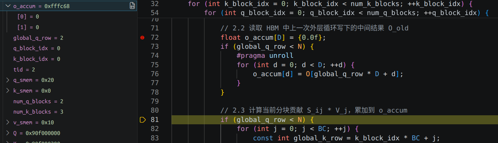
4.2.8 计算内积并累积O¶
for (int j = 0; j < BC; ++j) {
const int global_k_row = k_block_idx * BC + j;
if (global_k_row < N) {
float S_ij = 0.0f;
#pragma unroll
for (int d = 0; d < D; ++d) {
S_ij += q_smem[tid][d] * k_smem[j][d];
}
#pragma unroll
for (int d = 0; d < D; ++d) {
o_accum[d] += S_ij * v_smem[j][d];
}
}
}
回顾一下，现在k_smem里存储的是K的前2行，v_smem里是对应的V的前两行。我们要做的是用Q_i和所有的K_j做内积求相似度(标量)，然后把这个相似度乘以V_j并累加到O_i里。所以这里我们计算的是：
下面用我们的实际值计算一下。
根据 0-based 索引，从前面的例子中提取对应的向量：
- Q_2 = \begin{pmatrix} 1 & 1 \end{pmatrix} （Q 的第 3 行）
- K_0 = \begin{pmatrix} 1 & 1 \end{pmatrix} （K 的第 1 行）
- K_1 = \begin{pmatrix} 2 & 0 \end{pmatrix} （K 的第 2 行）
- V_0 = \begin{pmatrix} 1 & 0 \end{pmatrix} （V 的第 1 行）
- V_1 = \begin{pmatrix} 0 & 1 \end{pmatrix} （V 的第 2 行）
1. 计算第一项 \langle Q_2, K_0 \rangle V_0
- 内积计算：
- 标量乘向量：
2. 计算第二项 \langle Q_2, K_1 \rangle V_1
- 内积计算：
- 标量乘向量：
3. 相加求和
计算结果如下图：
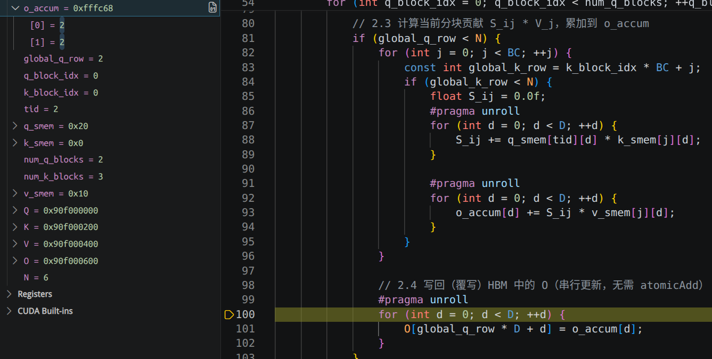
4.2.9 写回O¶
注意，我们需要计算是：
我们现在只计算了前2个累积和，所以需要写回HBM，等待下次外循环，加载K_2,V_2,K_3,V_3。然后计算这2个的累积和，依次类推。
for (int d = 0; d < D; ++d) {
O[global_q_row * D + d] = o_accum[d];
}
4.2.10 同步¶
__syncthreads(); // 确保 q_smem 可被下一个 Q_i 安全覆盖
因为线程有先有后，我们可以同步一下。其实对于这个代码，不同步也是可以的，因为q_smem[tid]只被线程tid读写。
4.2.11 进入内部循环的第二次执行¶
首先加载的是Q的第二个块：
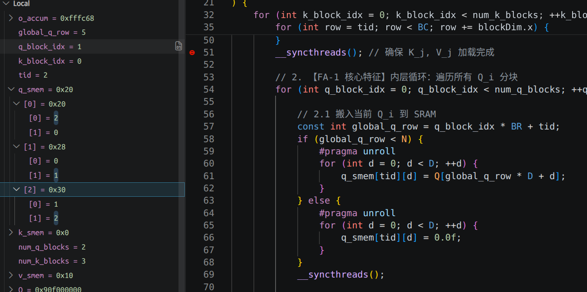
然后是读取O_5，因为我跟踪的是第3个线程，它的tid=2，所以在内部循环的第二次，它处理第6行，也就是O_5。
显然这个时候O_5=0。
接着还是计算：\langle Q_5, K_0 \rangle V_0 + \langle Q_5, K_1 \rangle V_1
我们把焦点放在O_2上，所以不去管这里的执行结果。
4.2.12 进入外部循环的第二次执行¶
到目前为止，第一次外部循环执行晚完成，我们的线程tid=2计算了：
如果看整个块(3个线程)，那么我们完成了：
但是我们需要计算Q_i和所有的K_j的内积并乘以V_j。我们第一次外部循环只算了K_0,K_1，接下来外部循环的第二次执行要计算K_2,K_3了。计算逻辑完全相同，我们简单的看一下tid=2的第一次执行。
4.2.13 计算过程¶
4.2.13.1 加载K_2,K_3,V_2,V_3¶
结果为：
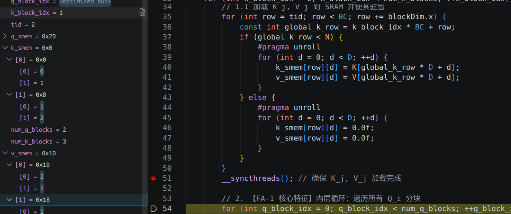
4.2.13.2 加载Q_0,Q_1,Q_2¶
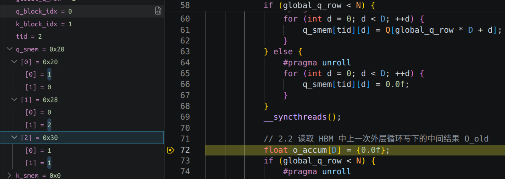
5.2.13.3 加载O_2¶
注意：这一次O_2不是0了，而是上一次的计算结果：
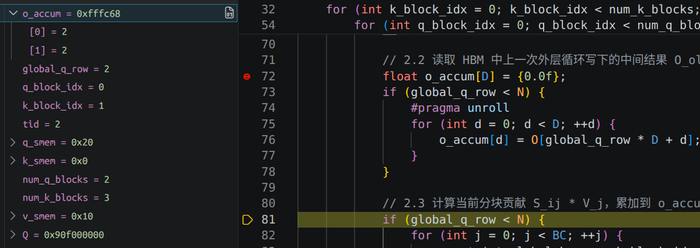
5.2.13.4 累积计算¶
接下来计算对应的两项：
已知：
- Q_2 = \begin{pmatrix} 1 & 1 \end{pmatrix}
- K_2 = \begin{pmatrix} 0 & 1 \end{pmatrix}, \quad V_2 = \begin{pmatrix} 2 & 1 \end{pmatrix}
- K_3 = \begin{pmatrix} 1 & 2 \end{pmatrix}, \quad V_3 = \begin{pmatrix} 1 & 1 \end{pmatrix}
1. 计算第三项 \langle Q_2, K_2 \rangle V_2
- 内积计算：
- 标量乘向量：
2. 计算第四项 \langle Q_2, K_3 \rangle V_3
- 内积计算：
- 标量乘向量：
3. 本轮累加与历史结果合并
- 本轮新增和：
- 加上一步的累加值 \begin{pmatrix} 2 & 2 \end{pmatrix}：
当前 O_2 的累加结果更新为 \begin{pmatrix} 7 & 6 \end{pmatrix}。
到此为止，我们已经计算了：
然后在最后一次外循环，我们将得到完整的O_2。这里就不赘述了。
4.3 这种算法的问题¶
从上面的执行我们可以看到，每执行一次外层循环，我们遍历了一次Q，并且加载一次O和写回一次O。
这会导致严重的 HBM（高带宽内存）访存瓶颈：
- 频繁的 HBM 读写（Redundant I/O）： 由于输出矩阵 O 和在线 Softmax 的归一化统计量（行最大值 m、分母和 l）是按 Q 的行块 O_i 组织并在内层循环中被不断更新的，当外层循环切换到下一个 K, V 块 (j+1) 时，整个线程块不得不把上一轮算好的 O_i、 l_i、 m_i 从 HBM 读回来，更新后再 写回 HBM。这导致中间状态在 HBM 和 SRAM 之间来回反复折腾。
- 并行度受限： 以外层循环 K, V 为主导时，不同线程块之间在处理同一个 Q 区域时容易产生依赖或资源竞争，难以最大化利用现代 GPU 的多流处理器（SM）并行能力。
关于并行度受限，我们下面详细讨论一下。
4.4 并行度分析¶
前面我们的代码是启动一个线程块，每个线程块B_r个线程。每个线程通过跨步循环处理多行，比如上面的例子，线程tid=2会处理第3行和第6行。
为了提高并行度，我们可能想启动N / B_r个线程块，每个线程块还是B_r个线程，这样就是每一个线程只处理一个O_i。但是这种方法存在很大的问题，因为在启动一个线程块时，外层循环的K_j和V_j被加载到共享内存里之后可以被内层循环共享使用。比如上面的例子，线程tid=2在处理Q_2的时候可以用K_0,K_1,V_0,V_1，接着在处理Q_5的时候还是可以复用K_0,K_1,V_0,V_1。如果每个线程只处理一行，那么就无法实现复用，也就会增加K_j,V_j的读取次数。
那还有一种划分线程块和线程的方法：我们按照K/V来划分。我们可以让每个块处理B_c列，也就是有B_c个线程，然后启动N/B_c个线程块。比如之前的例子：
我们可以启动3个线程块，每个线程块处理K和V的2行。这样，外层循环就完全不需要了。在每个线程块里，我们只加载K和V块一次，然后内部循环遍历Q，计算逻辑和之前完全相同。
不过这里有一个问题，对于O_2，第一个线程块会计算：
第二个线程块会计算：
第三个线程块会计算：
因为这3个线程块会同时执行，如果还是读取原来的O_2然后把对应的累加并写回去就会产生数据竞争，这个时候就需要使用atomicAdd加锁了。当多个线程块并发尝试向全局内存（Global Memory / HBM）的同一个地址（例如 O_2 所在的内存空间）发起原子加操作时，会引发严重的性能坍塌。atomicAdd 带来的主要坏处包括：
- 硬件层面的串行化（Hardware Serialization） 全局内存的原子操作（Atomic Operations）在 GPU 硬件底层是通过 L2 缓存或内存控制器上的原子单元进行 Read-Modify-Write（读取-修改-写入） 的。如果多个 Block 同时请求修改同一个地址，硬件无法真正做到并行，而是会 强制将这些请求串行化（Serializing）——变成排队一个个执行。这直接抹杀了 GPU 的并行优势。
- 极高的访存延迟（High Latency Penalty） 寄存器或 Shared Memory 的读写只需 1 到几十个时钟周期，而全局内存的原子操作需要穿透多级缓存或直达 HBM 物理地址，延迟高达 数百个时钟周期。在排队等待的过程中，执行该操作的 Warp 会被迫挂起（Stall）。
- 内存总线与缓存争用（Bus & Cache Contention） 大量的原子指令会高频次地锁定缓存行（Cache Line），导致其他正常的访存请求无法穿透缓存。这会迅速耗尽 L2 缓存的带宽，甚至引发严重的“缓存颠簸（Cache Thrashing）”，拖累整个 GPU 上其他无关计算任务的执行效率。
- 扩展性崩塌（Poor Scalability） 随着矩阵规模 N 增大、线程块数量增多（例如在真实大模型中启动成百上千个 Block），对同一片输出区域的竞争会呈指数级恶化。原本应当带来数倍性能提升的硬件并发，反而会因为严重的锁竞争陷入整体停滞。
这种方法完全是不可行的，因此在FlashAttention v1里，它采用的算法是只使用一个线程块。当然，我们这里是计算一个注意力头，实际在LLM里计算的是多个头，而且通常还是一次计算一个Batch的。也就是说，真正的输入是(B, H, N, d)。我们上面的代码是计算(N, d)的一个头。而不同batch，不同的头直接完全是没有影响的，因此FlashAttention v1的一个线程块处理一个头(N,d)，然后可以启动BxH个块来提高并行度。
关于使用atomicAdd实现的多block并行的代码，因为上面的原因，实际上并没有在FlashAttention v1里用到，所以这里就不做介绍，感兴趣的同学可以参考完整代码：flash-attn-cpp/flash-attn-no-softmax_v1_debug.cu。
5. 外层循环改成Q(对应FlashAttention v2)¶
前面说了，外层循环是K/V存在两个问题：1. O(包括完整版本里的l和m)需要多次读取和写入HBM；2. 一个注意力头只能有一个线程块来处理，很难提高并行度。所以更好的办法是把内外循环对调一下。
5.1 代码¶
完整代码在flash-attn-cpp/flash-attn-no-softmax_v2_debug.cu，下面是核心的代码：
// 测试设定的超参数
#define BR 3 // Q 的分块大小 (Row Block)
#define BC 2 // K, V 的分块大小 (Col Block)
#define D 2 // Head Dimension (hidden_dim)
/**
* 适配 N=6, BR=3, BC=2, D=2 的 FlashAttention-2 风格简易 Kernel (无 Softmax)
*/
__global__ void flash_attn_no_softmax_kernel_v2(
const float* __restrict__ Q,
const float* __restrict__ K,
const float* __restrict__ V,
float* __restrict__ O,
const int N
) {
const int q_block_idx = blockIdx.x;
const int tid = threadIdx.x; // blockDim.x = BR = 3
// 1. Shared Memory 空间
__shared__ float q_smem[BR][D];
__shared__ float k_smem[BC][D];
__shared__ float v_smem[BC][D];
// 2. 线程私有寄存器数组（尺寸 D=2），零开销无锁累加
float o[D] = {0.0f};
// 3. 一次性将当前 Q_i 分块加载至 Shared Memory
const int global_q_row = q_block_idx * BR + tid;
if (global_q_row < N) {
#pragma unroll
for (int d = 0; d < D; ++d) {
q_smem[tid][d] = Q[global_q_row * D + d];
}
} else {
#pragma unroll
for (int d = 0; d < D; ++d) {
q_smem[tid][d] = 0.0f;
}
}
__syncthreads();
// 4. 遍历所有 KV 分块 (一共 num_k_blocks 个)
const int num_k_blocks = (N + BC - 1) / BC;
for (int k_block_idx = 0; k_block_idx < num_k_blocks; ++k_block_idx) {
// 4.1 协同加载 K_j 与 V_j 分块 (跨步循环支持 BR != BC)
for (int row = tid; row < BC; row += blockDim.x) {
const int global_k_row = k_block_idx * BC + row;
if (global_k_row < N) {
#pragma unroll
for (int d = 0; d < D; ++d) {
k_smem[row][d] = K[global_k_row * D + d];
v_smem[row][d] = V[global_k_row * D + d];
}
} else {
#pragma unroll
for (int d = 0; d < D; ++d) {
k_smem[row][d] = 0.0f;
v_smem[row][d] = 0.0f;
}
}
}
__syncthreads();
// 4.2 计算局部点积与向量累加
for (int j = 0; j < BC; ++j) {
float S_ij = 0.0f;
#pragma unroll
for (int d = 0; d < D; ++d) {
S_ij += q_smem[tid][d] * k_smem[j][d];
}
#pragma unroll
for (int d = 0; d < D; ++d) {
o[d] += S_ij * v_smem[j][d];
}
}
__syncthreads();
}
// 5. 寄存器结果直写 Global Memory
if (global_q_row < N) {
#pragma unroll
for (int d = 0; d < D; ++d) {
O[global_q_row * D + d] = o[d];
}
}
}
// C++ 包装 API
torch::Tensor flash_attn_forward_v2(torch::Tensor Q, torch::Tensor K, torch::Tensor V) {
TORCH_CHECK(Q.is_cuda() && K.is_cuda() && V.is_cuda(), "Inputs must be CUDA tensors");
TORCH_CHECK(Q.is_contiguous() && K.is_contiguous() && V.is_contiguous(), "Inputs must be contiguous");
const int N = Q.size(0);
const int d = Q.size(1);
TORCH_CHECK(d == D, "Head dimension must match defined D=2");
auto O = torch::empty_like(Q);
const int grid_size = (N + BR - 1) / BR;
const int block_size = BR;
cudaStream_t stream = c10::cuda::getCurrentCUDAStream();
flash_attn_no_softmax_kernel_v2<<<grid_size, block_size, 0, stream>>>(
Q.data_ptr<float>(),
K.data_ptr<float>(),
V.data_ptr<float>(),
O.data_ptr<float>(),
N
);
return O;
}
5.2 代码跟踪阅读¶
5.2.1 Kernel的启动¶
torch::Tensor flash_attn_forward_v2(torch::Tensor Q, torch::Tensor K, torch::Tensor V) {
const int N = Q.size(0);
const int d = Q.size(1);
auto O = torch::empty_like(Q);
const int grid_size = (N + BR - 1) / BR;
const int block_size = BR;
cudaStream_t stream = c10::cuda::getCurrentCUDAStream();
flash_attn_no_softmax_kernel_v2<<<grid_size, block_size, 0, stream>>>(
Q.data_ptr<float>(),
K.data_ptr<float>(),
V.data_ptr<float>(),
O.data_ptr<float>(),
N
);
return O;
}
这个版本我们的每个线程块还是B_r个线程，但是总共启动N / B_r个线程块，因此每个线程只处理一行。另外和之前的版本有一个细节上的区别：这个版本的O是未初始化的。我们回顾一下，之前的版本，O是零初始化的。
为什么之前的版本需要零初始化呢？
之前的版本需要对 O（输出矩阵或累加器）进行零初始化，核心原因在于代码中使用了 累加操作（如 +=）。
在 GPU 并行计算中：
- 加法的单位元是 0：当多个线程块、多次循环迭代或者多个部分结果需要往同一个内存位置累加时（例如
O[global_q_row * D + d] = o_accum[d];），必须保证初始状态是绝对的净空状态（即0）。 - 随机初始化的后果：如果 O 刚分配时是随机的内存垃圾（Garbage Data），执行
+=就会变成随机垃圾 + 有效计算值，这会直接污染最终的计算结果。
因此，只有当初始值为 0 时，第一次累加 0 + val 才能正确等于 val。如果新版本 O 是随机初始化的，那么在写入时就必须采用直接覆盖赋值（=）而不是累加（+=），或者在计算前显式将其清零。
那为什么新版本不需要初始化呢？
后面我们会看到，每个线程负责一行，它计算结束后使用的是 直接覆盖赋值（=） 而不是 累加赋值（+=）。
- 如果用
+=（累加）：必须要求初始值是0。因为计算逻辑是原有值 + 新计算值，如果初始内存是随机垃圾数据，结果就会被污染。 - 如果用
=（覆盖）：每次计算出的全新完整结果会直接把该内存位置原本的数值 完全重写。不管内存里原来是 0、1 还是随机垃圾，都会被新数据覆盖掉，因此完全不需要提前清零。
torch::empty_like(Q)
它构造一个shape和Q一样的Tensor，而且是 未初始化（Uninitialized）。
- 它的行为：它只负责向系统申请分配一块指定大小的内存空间，但 不会对这块内存做任何清零或赋值操作。
- 里面的内容是什么：这块内存里残留着之前其他程序或计算用完后遗留的 垃圾数据（Garbage Values）。从宏观表现来看，这些数据看起来像是随机的，但它们并不是由随机数生成器生成的。
- 为什么存在：它的最大优势是 快。省去了初始化（比如写 0 或赋随机数）的时间开销。
因此，如果你用 empty_like 创建了一个输出张量，后面必须采用直接覆盖（=）的方式把有效数据全盘写入，把原来的垃圾数据盖掉；绝对不能直接拿它来做累加（+=），否则那些未初始化的垃圾值会污染你的计算结果。
5.2.2 Kernel代码跟踪¶
5.2.2.1 输入矩阵与分块准备¶
- 维度：序列长度 N = 6，Head Dimension D = 2。
- 分块大小：BR = 3（Q 每次切 3 行），BC = 2（K/V 每次切 2 行）。
- 输入矩阵：
5.2.2.2 共享内存和寄存器变量¶
// 1. Shared Memory 空间
__shared__ float q_smem[BR][D];
__shared__ float k_smem[BC][D];
__shared__ float v_smem[BC][D];
// 2. 线程私有寄存器数组（尺寸 D=2），零开销无锁累加
float o[D] = {0.0f};
共享内存的定义和之前是一样的，不过这里把输出o放到了最顶层。为什么要这样呢？我们回顾一下之前的定义：
for (int k_block_idx = 0; k_block_idx < num_k_blocks; ++k_block_idx) {
// 外层循环
// 2. 【FA-1 核心特征】内层循环：遍历所有 Q_i 分块
for (int q_block_idx = 0; q_block_idx < num_q_blocks; ++q_block_idx) {
// 2.2 读取 HBM 中上一次外层循环写下的中间结果 O_old
float o_accum[D] = {0.0f};
因为在内层循环里每次都需要把o_accum初始化为0向量，直接在里面定义比较简单。当然我们也可以在最顶层定义它，然后在内层循环每次再零初始化。那这两种方法哪个好呢？
方法 1（在内层循环内部定义并初始化）效率更高，或者说对编译器更友好。
在 GPU/CUDA 编程中（尤其是处理类似 FlashAttention 这种寄存器压力极大的内核时），推荐将变量的作用域限制得尽可能小。具体原因如下：
- 寄存器生命周期与压力（Register Lifetime & Pressure）
- 方法 1（局部作用域）： 变量
o_accum的生命周期仅限于当前的内层循环。编译器（NVCC）能够精确地知道这组寄存器只在内层循环有效。一旦跳出内层循环，这批寄存器就可以被释放出来，给外层或后续的其他计算复用。 - 方法 2（顶层作用域）： 如果把
o_accum定义在最顶层，它的生命周期就会 贯穿整个函数。这意味着编译器在整个函数执行期间都必须“死死扣住”这批寄存器不放，导致整个内核的 寄存器压力（Register Pressure）急剧上升。
- 什么是寄存器溢出（Register Spilling）？
在 GPU 中，寄存器资源极其珍贵。如果因为变量生命周期过长导致同时活跃的寄存器超出硬件限制，编译器就会发生 寄存器溢出（Spill）——被迫把寄存器里的数据临时存放到慢速的本地内存（Local Memory，本质上还是显存 DRAM）里。一旦发生 Spilling，内核性能会呈断崖式下跌。
- 底层性能会有区别吗？
很多人担心在循环内部定义数组会不会导致每次迭代都重新分配内存？
- 不会。 对于像
D（如 64、128）这种编译期可知的固定小数组，现代 CUDA 编译器在编译时会将其 完全展开并映射到物理寄存器 中。 - 无论你写在里面还是外面，最终生成的底层机器码在初始化时都是一样的（几条把寄存器清零的
MOV指令）。因此，方法 1 既享受了与方法 2 完全相同的底层执行效率，又避免了寄存器长期被占用的风险。
5.2.2.3 加载Q到共享内存¶
// 3. 一次性将当前 Q_i 分块加载至 Shared Memory
const int global_q_row = q_block_idx * BR + tid;
if (global_q_row < N) {
#pragma unroll
for (int d = 0; d < D; ++d) {
q_smem[tid][d] = Q[global_q_row * D + d];
}
} else {
#pragma unroll
for (int d = 0; d < D; ++d) {
q_smem[tid][d] = 0.0f;
}
}
__syncthreads();
加载完成后，结果如下图：
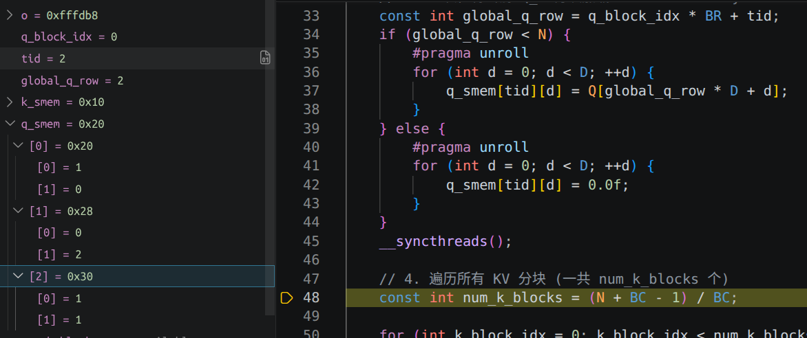
5.2.2.4 内部循环遍历K和V¶
// 4. 遍历所有 KV 分块 (一共 num_k_blocks 个)
const int num_k_blocks = (N + BC - 1) / BC;
for (int k_block_idx = 0; k_block_idx < num_k_blocks; ++k_block_idx) {
有的同学可能会说：这不是第一个循环吗？那它应该叫外部循环才对啊。
注意：由于我们现在是一个线程处理一行，所谓的外部循环其实已经被一个线程块的所有线程 “展开” 了。所以这里直接就是内部循环了。当然从代码来看这确实只有一个循环，但是为了和论文保持一致，我们还是把它叫做内部循环。
5.2.2.5 跨步循环加载K和V块¶
在内部循环的开始，首先加载K和V的块。因为线程数等于B_r，不一定定于B_c，所以需要使用跨步循环来加载：
for (int row = tid; row < BC; row += blockDim.x) {
const int global_k_row = k_block_idx * BC + row;
if (global_k_row < N) {
#pragma unroll
for (int d = 0; d < D; ++d) {
k_smem[row][d] = K[global_k_row * D + d];
v_smem[row][d] = V[global_k_row * D + d];
}
} else {
#pragma unroll
for (int d = 0; d < D; ++d) {
k_smem[row][d] = 0.0f;
v_smem[row][d] = 0.0f;
}
}
}
__syncthreads();
加载的结果如下图所示：
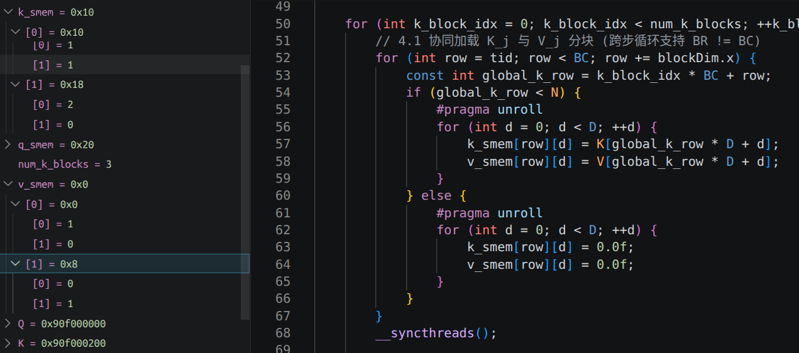
5.2.2.6 计算内积并且乘以对应的V¶
// 4.2 计算局部点积与向量累加
for (int j = 0; j < BC; ++j) {
float S_ij = 0.0f;
#pragma unroll
for (int d = 0; d < D; ++d) {
S_ij += q_smem[tid][d] * k_smem[j][d];
}
#pragma unroll
for (int d = 0; d < D; ++d) {
o[d] += S_ij * v_smem[j][d];
}
}
__syncthreads();
下面是详细执行过程：
1. 数据准备与变量状态¶
线程索引 tid = 2，对应处理 Q 的第 3 行 Q_2，在共享内存中的数据：
- Q 分块行数据 (
q_smem[tid]):
- K 分块矩阵 (
k_smem, BC=2, D=2):
- V 分块矩阵 (
v_smem, BC=2, D=2):
- 初始累加寄存器 (
o):
2. 循环执行模拟 (for (int j = 0; j < BC; ++j)，此处 BC = 2)¶
第一次循环：j = 0 (对应 K 和 V 的第 0 行)
-
计算点积
S_ij(Q_2 \cdot K_0)：- 初始化
S_ij = 0 d = 0:S_ij += q_smem[2][0] * k_smem[0][0]\rightarrow 0 + 1 \times 1 = 1d = 1:S_ij += q_smem[2][1] * k_smem[0][1]\rightarrow 1 + 1 \times 1 = 2- 结果：\text{S_ij} = 2
- 初始化
-
向量累加到
o(S_ij * V_0)：d = 0:o[0] += S_ij * v_smem[0][0]\rightarrow 0 + 2 \times 1 = 2d = 1:o[1] += S_ij * v_smem[0][1]\rightarrow 0 + 2 \times 0 = 0- 当前累加结果：\text{o} = \begin{pmatrix} 2 & 0 \end{pmatrix}
第二次循环：j = 1 (对应 K 和 V 的第 1 行)
-
计算点积
S_ij(Q_2 \cdot K_1)：- 初始化
S_ij = 0 d = 0:S_ij += q_smem[2][0] * k_smem[1][0]\rightarrow 0 + 1 \times 2 = 2d = 1:S_ij += q_smem[2][1] * k_smem[1][1]\rightarrow 2 + 1 \times 0 = 2- 结果：\text{S_ij} = 2
- 初始化
-
向量累加到
o(S_ij * V_1)：d = 0:o[0] += S_ij * v_smem[1][0]\rightarrow 2 + 2 \times 0 = 2d = 1:o[1] += S_ij * v_smem[1][1]\rightarrow 0 + 2 \times 1 = 2- 当前累加结果：\text{o} = \begin{pmatrix} 2 & 2 \end{pmatrix}
3. 执行结果¶
当该内层循环结束后，当前线程所维护的寄存器变量 o 的最终值为：
到此为止，我们已经计算了：
5.2.2.7 内部第二次循环¶
接下来是内部的第二次循环，注意这里和v1版本的区别。在v1里，我们加载K_0,K_1,V_0,V_1后会计算所有的Q：
而且处理完成后会把S_0,S_1,...,S_5写回到HBM，等下一次加载K_2,V_2,K_3,V_3时又把它们加载到片上(一般是共享内存)。
而我们v2的版本是Q_0,Q_1,Q_2常驻共享内存，然后遍历K和V，而且当前的和S_0,S_1,S_2就在当前线程的寄存器里，所以避免的重复的写入HBM然后读取。
因为我们这个线程块只有3个线程，所以它只负责S_0,S_1,S_2的计算，当前它们的值是：
接下来进入内部第二次循环，逻辑和前面是一样的。
1. 加载K和V的块¶
加载K_2,V_2,K_3,V_3到共享内存：
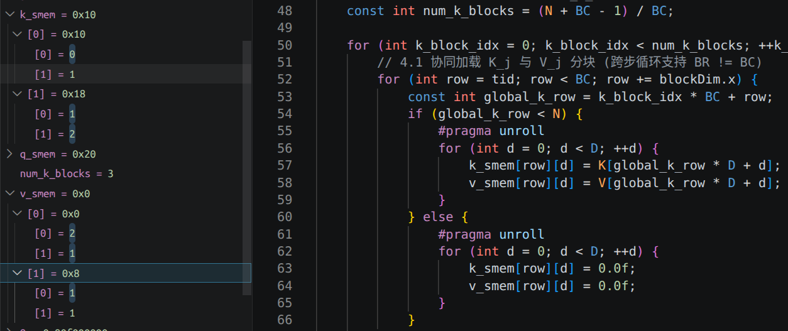
2. 计算内积并且乘以对应的V¶
1. 当前状态准备
- 线程索引与 Q 行 (
tid = 2):
- 上一轮累加后的寄存器 (
o):
- 当前 K 分块矩阵 (
k_smem, 图中第二轮加载):
- 当前 V 分块矩阵 (
v_smem, 图中第二轮加载):
第一次循环：j = 0 (对应 K_2 和 V_2)
-
计算点积
S_ij(Q_2 \cdot K_2)：- 初始化
S_ij = 0 d = 0:S_ij += q_smem[2][0] * k_smem[0][0]\rightarrow 0 + 1 \times 0 = 0d = 1:S_ij += q_smem[2][1] * k_smem[0][1]\rightarrow 0 + 1 \times 1 = 1- 结果：\text{S_ij} = 1
- 初始化
-
向量累加到
o(o += S_ij * V_2)：d = 0:o[0] += S_ij * v_smem[0][0]\rightarrow 2 + 1 \times 2 = 4d = 1:o[1] += S_ij * v_smem[0][1]\rightarrow 2 + 1 \times 1 = 3- 当前累加结果：\text{o} = \begin{pmatrix} 4 & 3 \end{pmatrix}
第二次循环：j = 1 (对应 K_3 和 V_3)
-
计算点积
S_ij(Q_2 \cdot K_3)：- 初始化
S_ij = 0 d = 0:S_ij += q_smem[2][0] * k_smem[1][0]\rightarrow 0 + 1 \times 1 = 1d = 1:S_ij += q_smem[2][1] * k_smem[1][1]\rightarrow 1 + 1 \times 2 = 3- 结果：\text{S_ij} = 3
- 初始化
-
向量累加到
o(o += S_ij * V_3)：d = 0:o[0] += S_ij * v_smem[1][0]\rightarrow 4 + 3 \times 1 = 7d = 1:o[1] += S_ij * v_smem[1][1]\rightarrow 3 + 3 \times 1 = 6- 当前累加结果：\text{o} = \begin{pmatrix} 7 & 6 \end{pmatrix}
执行结果
当第二轮外层/内层循环结合完毕后，寄存器 o 的最终值为：
至此，我们已经完成了：
5.2.2.8 内部第三次循环¶
代码逻辑和前面完全一样，我就不赘述了。最终的计算结果：\text{o} = \begin{pmatrix} 11 & 16 \end{pmatrix}
5.2.2.9 结果写回HBM¶
到此为止，O_2就完全计算完成，我们只需要在最后写回HBM一次：
if (global_q_row < N) {
#pragma unroll
for (int d = 0; d < D; ++d) {
O[global_q_row * D + d] = o[d];
}
}
因为每个线程负责一个O_i的完整计算，所以也不需要部分更新带来的同步(atomicAdd)。